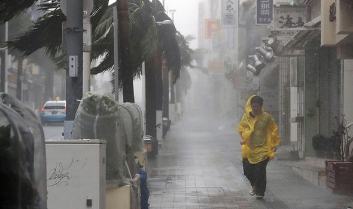
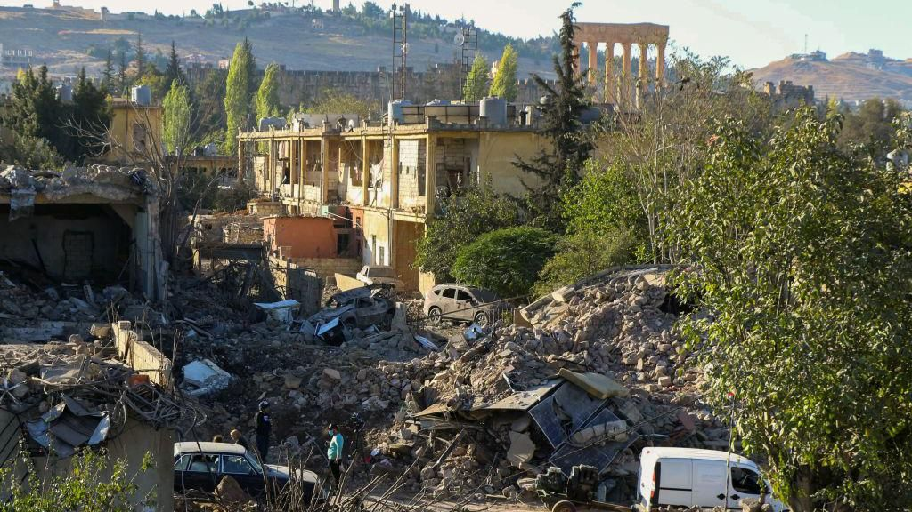

The Glenfinnan Viaduct is one of the best known landmarks in Scotland but at 123 years old, it's in need of restoration work.
Rope access teams have been working day and night in recent months to strengthen the bridge's concrete arches and trackside areas.
Made famous by the Harry Potter film series, hundreds of visitors gather at the viaduct each day to watch the "Hogwarts Express" train cross its 21 arches.

Typhoon Kong-rey makes landfall in Taiwan
Typhoon Kong-rey, the biggest typhoon to directly hit Taiwan in nearly 30 years, has made landfall on the island's eastern coast.
Schools and workplaces across Taiwan were closed on Thursday and supermarkets were stripped bare, as millions of residents braced for the storm which hit at about 13:40 local time (04:40 GMT).
At one point before it made landfall, Typhoon Kong-rey was packing winds over 200km/h close to its centre, making it the equivalent of a Category 4 hurricane.
Hundreds of flights and ferries, along with Taiwan’s stock exchange, have also been suspended.
The typhoon has injured over 70 people and killed at least one person, authorities said on Thursday afternoon. A 56-year-old woman died after a falling tree struck a vehicle she was in.
Authorities say it has weakened to "moderate typhoon" during local evening time.
It has also caused power outages in half a million households, according to electricity supplier Taiwan Power Company.
In the eastern county of Hualien, one employee of the local township administrative office told news agency AFP that they kept receiving reports of disasters from local residents but couldn't get to them "due to severe wind and rain".
It is unusual for a typhoon this big to come so late in the year. Taiwan’s typhoon season, according to its weather agency, generally falls between July and September.
For the last eight decades all the strongest typhoons have come within that window. But this year two huge storms have hit Taiwan in October — the other being super typhoon Krathon, which killed four people and left more than 700 injured.
“I’m 70 years old,” one man in Hualien told a TV reporter, “and I have never seen a typhoon hit this late in the year.”
Israel strikes historic Lebanese city of Baalbek after ordering evacuation
Israeli strikes have killed 19 people, including eight women, around Lebanon's eastern city of Baalbek, the country's health ministry has said.
It came hours after tens of thousands of residents fled in response to evacuation orders issued by the Israeli military that covered the entire city and two neighbouring towns.
Mayor Mustafa al-Shell told the BBC more than 20 strikes were reported on Wednesday afternoon in the Baalbek area, with five inside the city itself, where there is a Unesco-listed ancient Roman temple complex.
The Israeli military said it had struck Hezbollah command-and-control centres and infrastructure in Baalbek and Nabatiyeh, in southern Lebanon.
The military also said it had targeted Hezbollah fuel depots in the Bekaa Valley, where Baalbek is located. It gave no details, but Lebanon's state news agency said diesel tanks were hit in the town of Douris, where Mr Shell said pictures showed a huge column of black smoke rising into the air.
The attacks came as Hezbollah’s new secretary-general said the group would continue its war plan against Israel under his leadership and that it would not “cry out” for a ceasefire.
Speaking a day after his appointment was announced, Naim Qassem said he would follow the agenda of his predecessor, Hassan Nasrallah, who was killed in an Israeli air strike in Beirut last month.
Qassem made the speech from an undisclosed location amid reports suggesting he had fled to Iran, which is Hezbollah’s main supporter.
After weeks of an air offensive that has brought devastation to large parts of southern Lebanon and Beirut’s southern suburbs, the Israeli military appears to be expanding its campaign against Hezbollah in the east of the country - another area where the group has a strong presence and support.
Baalbek is a key population centre in the Bekaa Valley, near the border with Syria. It is a largely rural area and one of Lebanon’s poorest regions.
Hezbollah has established part of its infrastructure and recruited fighters from there.
The area is also strategically important for Hezbollah, as it is part of a route linking the group to its allies in Syria and Iraq and, ultimately, to Iran.
On Wednesday morning, the Israeli military issued evacuation orders for the whole of Baalbek and the neighbouring towns of Ain Bourday and Douris, warning that it would “act forcefully against Hezbollah interests”.
Roula Zeaiter, programme manager for the Lebanese Women Democratic Gathering (RDFL), said the orders sparked panic among residents, including displaced families from other parts of the country.
"Minutes after the order to leave came, the streets were filled with people grabbing their things, locking their homes and closing their shops,” she told the charity ActionAid.
“We’re scrambling like scared mice, moving from place to place.
Lebanon is becoming like Gaza, with Israeli forces using the same tactics.”
Videos posted online showed huge traffic jams on the main roads out of the city.
Mustafa al-Shell estimated that about 50,000 people fled within two hours, but he added that many others decided to stay behind “for various reasons”.
He said the initial wave of Israeli strikes on Wednesday afternoon hit villas and other residential buildings in Baalbek’s city centre and its outskirts.
“It’s not clear what the Israelis have targeted,” he added. “But I can tell you that there are no ammunition dumps or weapons caches in Baalbek.”
The state-run National News Agency (NNA) reported that the Ras al-Ain Hills, Amshki, al-Asira, al-Kayyal Road areas were hit, and the northern and southern entrances to Baalbek. The strikes also targeted Ain Bourday and Douris, including diesel tanks in its vicinity, it said.
Later, the Lebanese health ministry said 11 people, including three women, were killed in a strike on Salibi Farm in the Baalbek area. Eight others, including five women, were killed in another strike in Bednayel, it added.
The ministry separately said another 11 people were killed in Israeli strikes in the town of Sohmor, in the southern Bekaa Valley.
Following the strikes on Baalbek, the Israeli military said it had conducted "intelligence-based strikes on fuel depots located inside military compounds belonging to Hezbollah's Logistical Reinforcement Unit 4400 in the Bekaa Valley". The unit was responsible for transferring weapons from Iran, it added.
A second statement said aircraft had "struck command-and-control centres and terrorist infrastructure" in the Baalbek area.
It also accused Hezbollah of systematically using civilian infrastructure and areas for military activities, which the group has previously denied.
Mr Shell said none of the strikes hit Baalbek’s Unesco World Heritage site, which comprises the ruins of Roman temples which date back to the 1st Century AD and are among the largest and best-preserved in the world.
However, he warned of what he called “Israeli treachery” and said Lebanese authorities were “pleading... for international bodies to stand fast in defence of Baalbek's Roman ruins”.
Unesco warned in a post on X on Wednesday that featured a photo of the Temple of Jupiter at Baalbek, that World Heritage sites across the Middle East, particularly those in Lebanon, were under threat.
“Unesco recalls to all parties their obligation to respect and protect the integrity of these sites.

They are the heritage of all humanity and should never be targeted,” it said.
On Monday night, several buildings were levelled around the Gouraud Barracks area of Baalbek, near the Roman ruins, during Israeli strikes that killed more than 60 people across the Bekaa Valley.
When asked by reporters in Washington about the Baalbek strikes, US state department spokesman Matthew Miller called on Israel not to threaten the lives of civilians or damage critical civilian infrastructure and cultural heritage.
He also confirmed that US Middle East envoys Amos Hochstein and Brett McGurk were “traveling to Israel to engage on issues including a diplomatic resolution in Lebanon, as well as how we get to an end to the conflict in Gaza”.
Lebanon’s Prime Minister, Najob Mikati, expressed optimism that a ceasefire might be possible in "the coming hours or days".
Two sources told Reuters news agency that US mediators were working on a proposal for a 60-day ceasefire between Israel and Hezbollah which would be used to finalise the full implementation of UN Security Council resolution 1701.
The resolution ended the last war they fought in 2006 and included a call for southern Lebanon to be free of any armed personnel or weapons other than those of the Lebanese state and a UN peacekeeping force.
Israel went on the offensive against Hezbollah - which it proscribes as a terrorist organisation - after almost a year of cross-border fighting sparked by the war in Gaza.
It says it wants to ensure the safe return of tens of thousands of residents of northern Israeli border areas displaced by rocket attacks, which Hezbollah launched in support of Palestinians the day after its ally Hamas’s deadly attack on Israel on 7 October 2023.
The Israeli military said about 60 projectiles fired by Hezbollah crossed from Lebanon into Israel on Wednesday. No injuries were reported.
More than 2,800 people have been killed in Lebanon since then, including 2,100 in the past five weeks, and 1.2 million others displaced, according to Lebanese authorities.
Israeli authorities say more than 60 people have been killed in northern Israel and the occupied Golan Heights.
Marcos tells Filipinos: Pray for departed loved ones, victims of storm
MANILA, Philippines — President Ferdinand Marcos Jr., in observance of All Saints’ Day and All Souls’ Day, called on the public to pray for their departed loved ones and include those affected by recent storms Kristine and Leon. Marcos also said that immediate response for the victims will remain a priority of the government. “Many of our fellow citizens face severe challenges due to the recent storms. So this Undas, aside from praying for our departed loved ones, let us also include in our prayers the victims and those affected by the disasters,” said Marcos in his PBBM vlog.
He also emphasized the devastating effects of climate change that are being experienced in the country, such as extreme heat, record-breaking rainfall, and flooding in areas that never used to experience floods. “Kasama ang DSWD [Department of Social Welfare and Development], DND [Department of National Defense], DPWH [Department of Public Works and Highways], DILG [Department of the Interior and Local Government] at iba pang mga ahensya ng pamahalaan, maaasahan ninyong pagtitibayin pa ang ating national at local disaster risk reduction at response,” he said. (Our government departments and other agencies are here to intensify our responses to local disasters and risk reduction.) Kristine exited the Philippine area of responsibility (PAR) last October 25, but left damage to infrastructure and agriculture and caused widespread flooding and loss of lives.
Meanwhile, Leon left PAR morning of November 1 and is no longer directly affecting any part of the country. Both storms flooded most of provinces in Luzon and Visayas, displacing many families.
The rebel painter who ushered in a new era of Indian art
Some artists become legends in their lifetime yet remain a mystery years after their death.
Indian painter Vasudeo Santu Gaitonde, born 100 years ago on 2 November 1924, was one such master.
Considered one of South Asia's greatest abstract painters, Gaitonde was part of a rebellious generation of artists who laid the foundation for a new era of Indian art in the mid-20th Century.
He was deeply inspired by the techniques used by Western painters but his work remained rooted in Asian philosophy, infusing light and texture in ways that, admirers say, evokes a profound sense of calmness.
His paintings were meant to be "meditations on the light and universe", says Yamini Mehta, who worked as the international head of South Asian Art at Sotheby’s.
"The play of light and shadows and texture makes these paintings dynamic."
In a career that spanned decades, Gaitonde never pursued fame or fortune. But his works continue to grab attention at auctions, years after his death in 2001.
In 2022, an untitled oil painting by him fetched 420m rupees (nearly $5m; £3.9m), setting a new record for Indian art at that time. The bluish shades of the work reminded viewers of large expanses of the sea or sky.
Gaitonde lived as a recluse for most of his life. He was deeply impacted by Japanese Zen philosophy and this meditative mindset was often reflected in his paintings.
“Everything starts from silence. The silence of the canvas. The silence of the painting knife. The painter starts by absorbing all these silences… Your entire being is working together with the brush, the painting knife, the canvas to absorb that silence and create,” he told journalist Pritish Nandy in a rare interview in 1991.
Originally from the western state of Goa, Gaitonde's family lived in Mumbai city (formerly Bombay) in a small, three-room dwelling in a chawl - an affordable tenement complex for the city’s working class.
A born artist, he joined Mumbai’s famous JJ School of Arts for training in 1946. Despite his father’s disapproval - art was not seen as a viable career in India at the time - Gaitonde funded his own studies and earned a diploma in 1948.
Trapped in cars and garages: Why Valencia floods proved so deadly
As Spain reels from the flash floods which struck the south-east of the country this week, many are wondering why the death toll, which currently stands at over 200, is so high.
Almost all of the deaths confirmed so far have been in the Valencia region on the Mediterranean coast.
Some areas have been particularly devastated: the town of Paiporta, population 25,000, reported at least 62 deaths.
Various factors, including drivers becoming trapped in their cars, poor planning by officials and extreme rainfall being exacerbated by climate change are all likely to have contributed.
The civil protection agency, overseen by the regional government, issued an emergency alert to the phones of people in and around the city of Valencia after 20:00 local time (19:00 GMT) on Tuesday, by which time the flood water was swiftly rising in many areas and in some cases already wreaking havoc.
A large number of those killed were on the roads, in many cases returning from work, when the flash floods struck.
Video footage shows how a first wave of flood water washed through Paiporta as cars were still circulating. Although rainfall was heavier in other areas, such as Utiel and Chiva, Paiporta’s geography, with a ravine running through its centre, made the impact of the flood particularly devastating.
Mayor Maribel Albalat said that the town was ill-prepared in terms of planning, with many ground-floor flats. Six residents of an elderly care home died when the flood water washed into the building when they were still on the ground floor. She also suggested there was an element of complacency.
Spain sends 500 more troops to Valencia as anger grows over lack of support
The region of Chiva near Valencia saw as much rainfall in one eight-hour period on Tuesday as it would normally see in an entire year, according to state meteorological agency Aemet.
The warming climate is also likely to have contributed to the severity of the floods.
In a preliminary report, World Weather Attribution (WWA), a group of international scientists who investigate global warming’s role in extreme weather, estimated that the rainfall was 12% heavier than it would otherwise have been, and that such weather even itself was twice as likely.
More News >
Tour de France to take all-French route for first time since 2020
The 112th edition of the Grand Tour will feature 21 stages, starting in Lille on 5 July and ending in Paris on 27 July.
2 hrs ago | Asia
Angelica Lopez champions Pinoy talent in Miss International Halloween look
Bb. Pilipinas Angelica Lopez is a real-life Barbie doll for the Miss International pageant’s Halloween party.
The Glenfinnan Viaduct is one of the best known landmarks in Scotland but at 123 years old, it's in need of restoration work.
1 hrs ago | Asia
‘Hello, Love, Again’ to close 10th Asian World Film Festival
“Hello, Love, Again” — the sequel to the hit 2019 film “Hello, Love, Goodbye” starring Kathryn Bernardo and Alden Richards
10 hrs ago | Asia
How Japan's youngest CEO transformed Hello Kitty
As the cute character celebrates her 50th anniversary, the firm behind it is now a trillion yen business.
4 hrs ago | Asia
Note:This is meant for educational purpose only. The material used in this is purely for educational purposes. We do not claim ownership of the images, news and content used, and no copyright infringement is intended. All rights go to their respective owners.